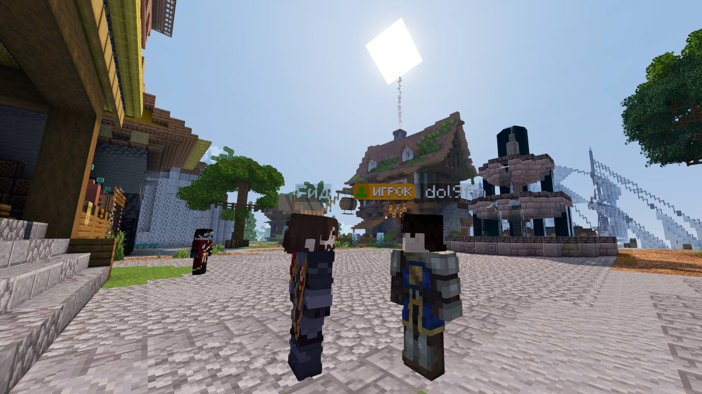

Гайды / Начало
Первые шаги
Что сделать в первый час: войти, получить набор, перебраться в Дикие земли и пережить первую ночь.

Подключение
Нужна Minecraft Java Edition 1.21.11. Моды не нужны — всё работает на чистом клиенте.
- Открой «Сетевая игра» → «Добавить сервер».
- Впиши адрес
middlelands.gomc.fun. Если ты в России и соединение рвётся — используйmiddlelandsru.gomc.fun, это вход через узел в Москве. - Включи «Наборы ресурсов сервера: Включены» в настройках сервера в списке.
- Заходи. Перед входом в мир загрузится ресурспак — около 110 МБ. Первый раз это может занять пару минут, потом он берётся из кэша.
Если игру выкидывает на загрузке пака — выдели Minecraft минимум 4 ГБ памяти в настройках лаунчера.
Регистрация
Сервер защищён паролем — никто не зайдёт под твоим ником.
- При первом входе напиши
/register пароль пароль— один и тот же пароль дважды. - При следующих входах —
/login пароль. - На вход даётся три минуты. Пока не вошёл, двигаться и писать в чат нельзя.
Не используй пароль от почты или других игр. Если забыл пароль — пиши администрации в Discord.
Спавн и гид Эйден
Ты появишься на спавне — безопасном городе. Ломать и ставить блоки здесь нельзя, зато можно пользоваться станциями, торговать и говорить с NPC. Нажми ПКМ по любому жителю — откроется диалог внизу экрана. Листать — Shift или F, выбирать ответ — колёсиком мыши или цифрами.
Первым делом найди Гида Эйдена. Он:
- кратко расскажет о выживании, болезнях, кузне и других механиках;
- подскажет, к какому мастеру идти за чем;
- выдаст стартовый набор: кожаную броню, каменные меч, кирку, топор и лопату, лодку и 10 буханок хлеба;
- отправит в чат ссылки на Telegram и Discord.
Стартовый набор выдаётся один раз за жизнь — после смерти его можно взять снова.
Мастера на спавне
У каждого мастера свой диалог, задания и подсказки по его ремеслу.
| NPC | Чем поможет |
|---|---|
| Гид Эйден | Обзор сервера, стартовый набор, ссылки |
| Кузнец Горан | Кузнечное дело, горны и чертежи |
| Шеф Гастон | Кулинария, станции кухни, рецепты |
| Доктор Вейс | Болезни, радиация, лекарства |
| Трактирщик Олаф | Пивоварение и напитки |
| Фермер Шишык | Культуры, полив, удобрения |
| Старый рыболов Ульф | Рыбалка, снасти, лучшие места |
| Охотник на ведьм Рейнар | Монстры и задания на охоту |
| Квартирмейстер Ричард | Снаряжение и сеты |
| Метеоролог Фрида | Сезоны и погода |
| Строитель Бруно, дизайнер Лилия | Блоки, мебель и декор |
| Паромщик Бьорн | Переправа в Дикие земли и обратно |
Переправа в Дикие земли
Спавн — отдельный мир. Жить, строить и добывать ресурсы нужно в Диких землях. Туда отвозит паромщик Бьорн у причала.
- Нажми ПКМ по Бьорну и выбери «Вези меня в Дикие земли».
- Экран потемнеет, зашумят вёсла — через три секунды ты на другом берегу.
- Первая переправа бесплатная, дальше — 50 монет в любую сторону.
- Обратно на спавн везёт тот же Бьорн на другом берегу. Как он успевает — секрет гильдии перевозчиков.
Первая ночь
Ночью вместо обычных скелетов поднимаются мечники, лучники и маги. Без брони они опасны.
- Пока светло — сруби дерево, сделай верстак и печь, добудь уголь.
- До темноты найди укрытие: построй домик, займи пещеру или вкопайся в холм.
- Разведи костёр — он греет. Зимой без тепла ночью можно замёрзнуть.
- Поставь кровать и поспи — ночь пропустится быстрее.
- Как обживёшься, основай своё королевство:
/k create Название— это твой дом, земли под защитой и друзья рядом (подробности — в гайде «Королевства»).
Не ешь сырое мясо и рыбу — это прямой путь к пищевому отравлению. Пожарь их на костре.
Если погиб
После смерти вещи и весь опыт остаются в могиле на месте гибели. На возвращение есть 30 минут — потом могила исчезнет вместе с содержимым.
- Нажми ПКМ по могиле, чтобы забрать вещи.
- Чужую могилу открыть тоже можно — не умирай в людных местах.
- Стартовый набор у Эйдена можно взять снова.
Команды
/register пароль пароль | регистрация |
/login пароль | вход |
/spawn | на спавн |
/k create имя | основать королевство |
/tpa ник | попроситься к другу |
/msg ник текст | личное сообщение |